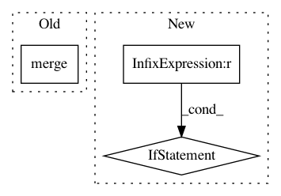

8bc74a2c9f87674990ace81818ecac2ea9016ac9,src/sdk/pynni/nni/compression/torch/speedup/infer_shape.py,,conv2d_mask,#Any#Any#,605
Before Change
// deal with coarse grain mask
if "weight" in module_masks.param_masks:
module_masks.param_masks["weight"].merge(weight_cmask)
module_masks.param_masks["bias"].merge(bias_cmask)
else:
module_masks.set_param_masks("weight", weight_cmask)
module_masks.set_param_masks("bias", bias_cmask)
output_cmask = CoarseMask(num_dim=4)
After Change
assert module_masks.output_mask == io_cmask
return None, module_masks.output_mask
else:
if module_masks.input_mask is None:
module_masks.set_input_mask(io_cmask)
else:
assert module_masks.input_mask == io_cmask
return module_masks.input_mask, None
def conv2d_inshape(module_masks, mask):
In pattern: SUPERPATTERN
Frequency: 3
Non-data size: 3
Instances
Project Name: microsoft/nni
Commit Name: 8bc74a2c9f87674990ace81818ecac2ea9016ac9
Time: 2020-10-09
Author: 38930155+chicm-ms@users.noreply.github.com
File Name: src/sdk/pynni/nni/compression/torch/speedup/infer_shape.py
Class Name:
Method Name: conv2d_mask
Project Name: tryolabs/luminoth
Commit Name: e83d699863929fa2d138adcaefd78b101058dd73
Time: 2018-02-08
Author: agustin@tryolabs.com
File Name: luminoth/train.py
Class Name:
Method Name: run
Project Name: microsoft/nni
Commit Name: 8bc74a2c9f87674990ace81818ecac2ea9016ac9
Time: 2020-10-09
Author: 38930155+chicm-ms@users.noreply.github.com
File Name: src/sdk/pynni/nni/compression/torch/speedup/infer_shape.py
Class Name:
Method Name: conv2d_outshape